This document is created for Lone Pine Landscapes for showing what we prefer. Lone Pine can refer to these inspiration images for design ideas. We took photos from open inspections in upper north shore or googled.
Please use this document for reference only. Designer shall feel free to input any ideas based on his experiences and professionals. We welcome any good design ideas.
Ref: https://www.realestate.com.au/sold/property-house-nsw-st+ives-128278750


Ref: https://www.realestate.com.au/property/16-surrey-rd-turramurra-nsw-2074

Ref: https://www.realestate.com.au/sold/property-house-nsw-turramurra-134005254
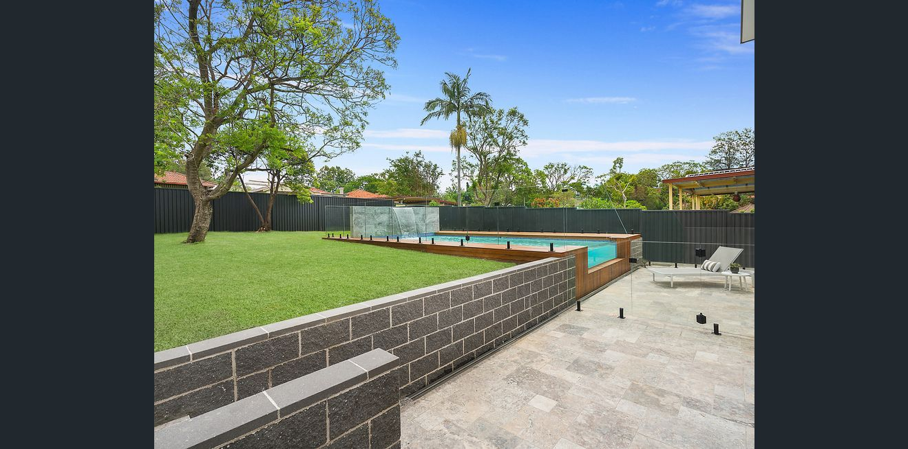
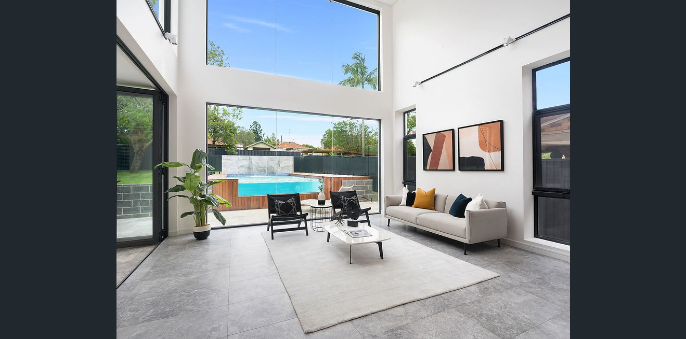

Ref: https://www.realestate.com.au/property//13-parry-st-putney-nsw-2112
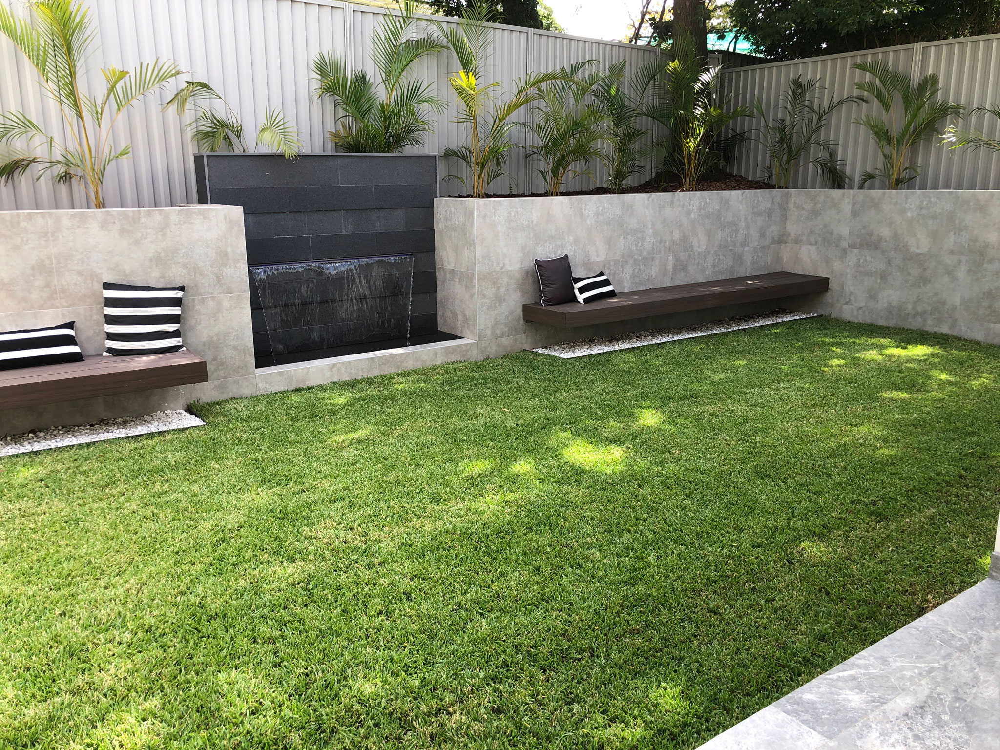

Ref: https://www.realestate.com.au/sold/property-house-nsw-point+piper-135873394

Ref: https://www.realestate.com.au/sold/property-house-nsw-st+ives-134867650


Ref: https://www.realestate.com.au/sold/property-house-nsw-north+epping-135294230

Ref: https://www.realestate.com.au/sold/property-house-nsw-bellevue+hill-134587862
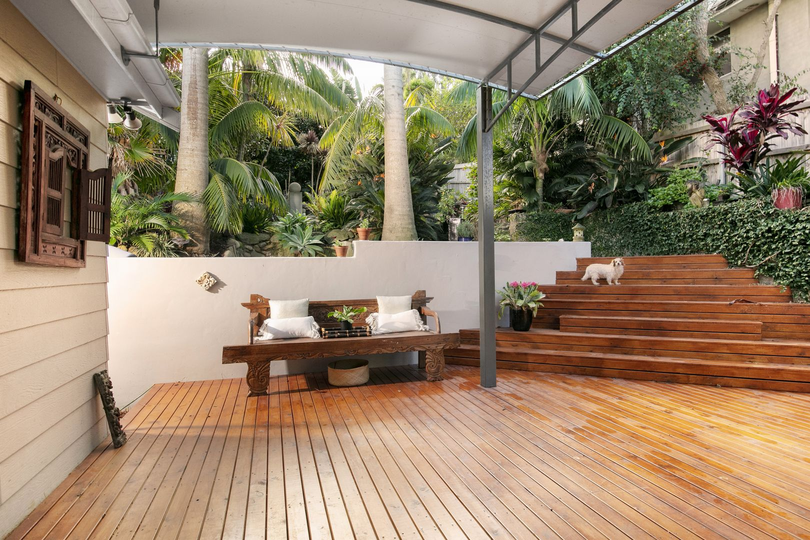
Ref: https://www.domain.com.au/2-bellevue-parade-north-curl-curl-nsw-2099-2016542914
 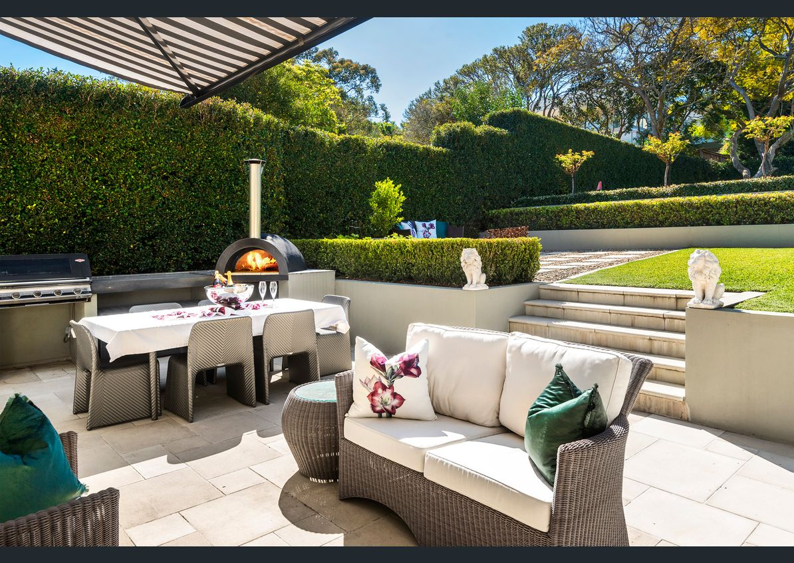
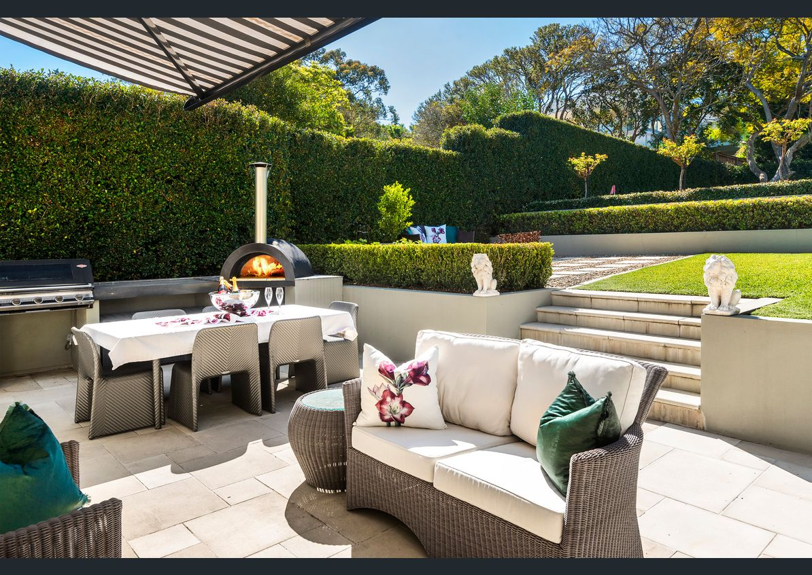
 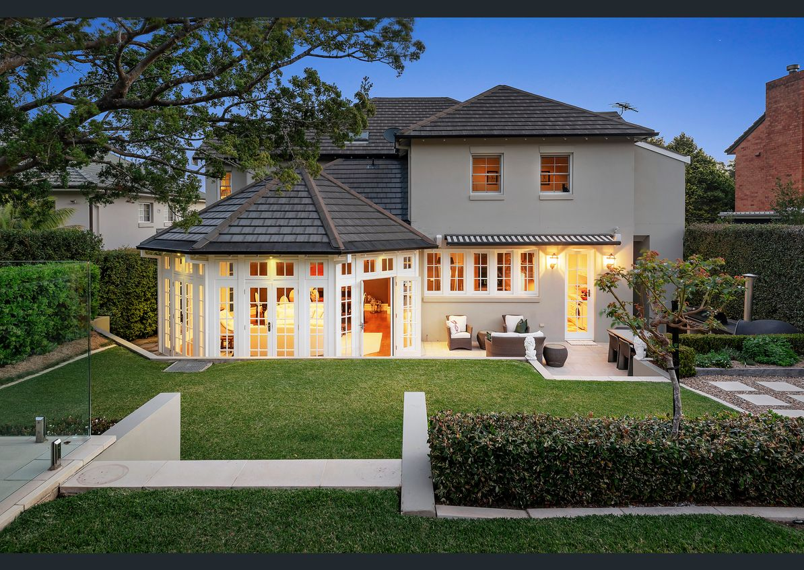
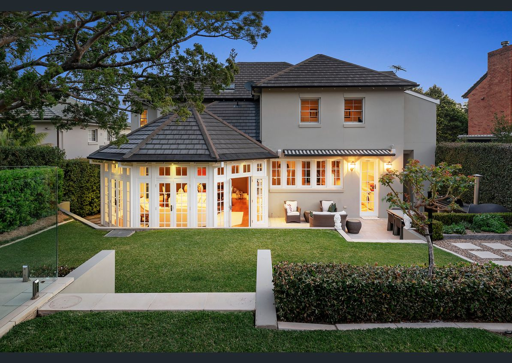

Ref: https://www.realestate.com.au/sold/property-house-nsw-turramurra-134005254
Neighbour at rear of the lot needs her privacy. If we removed the existing tree at rear of the lot, we could put some dense hedge, for example:
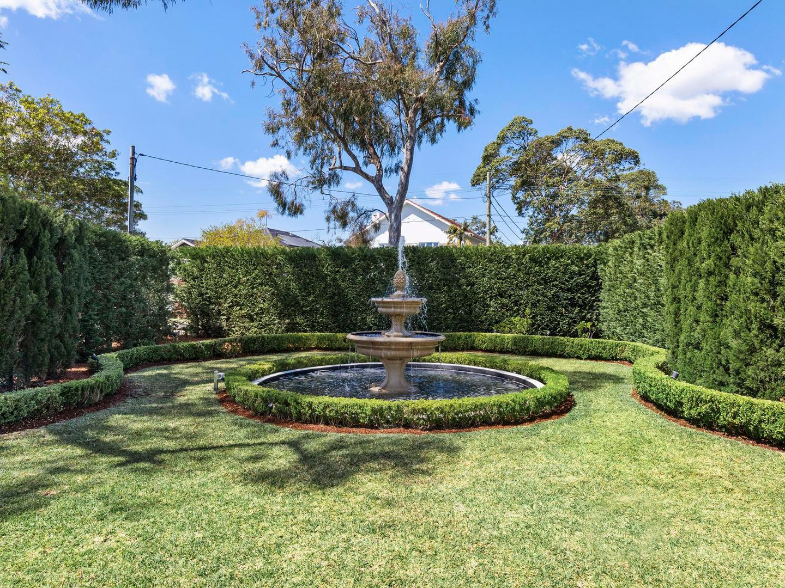

East side has lots sun in the morning and afternoon before 2pm.
The pergola and desk feature can be optional and leave as future build for budget reason.


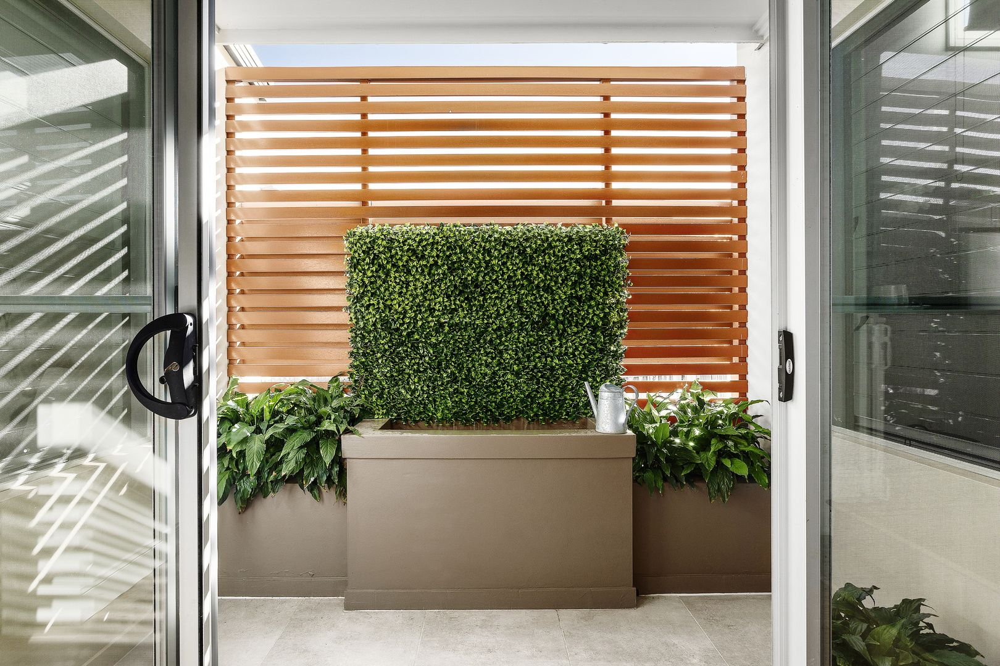

Ref: https://www.domain.com.au/16-thompson-street-mosman-nsw-2088-2016811173
the narrow side
Because we can see through from kitchen and pantry glass. We wanna some low maintain plants there. Ground surface prefer to be sealed by concrete.


 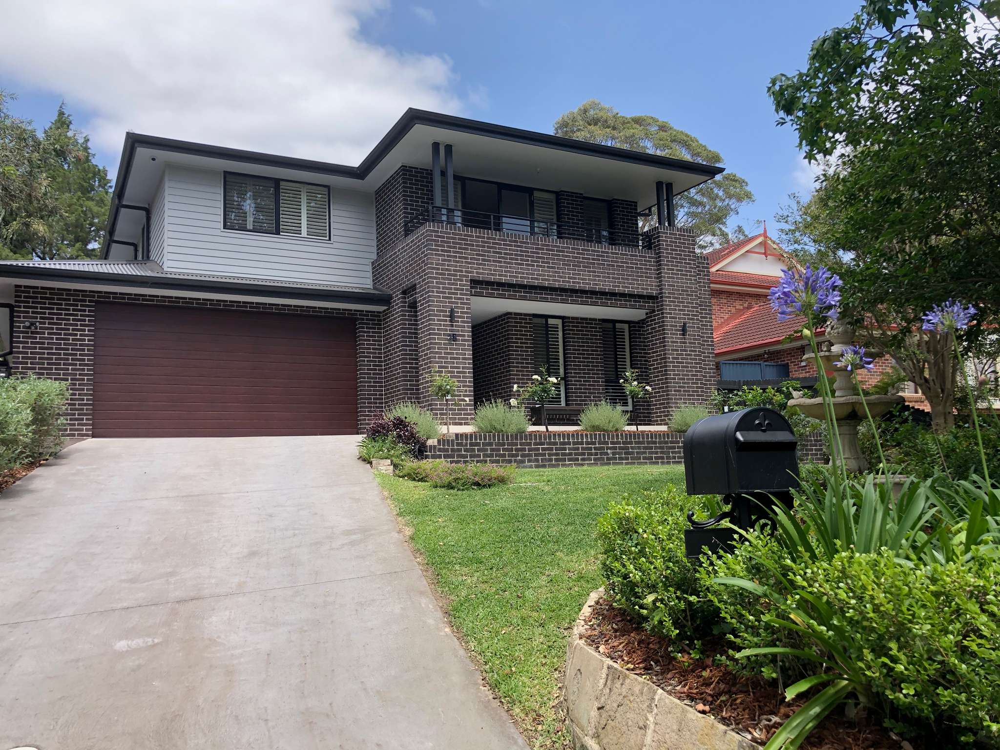
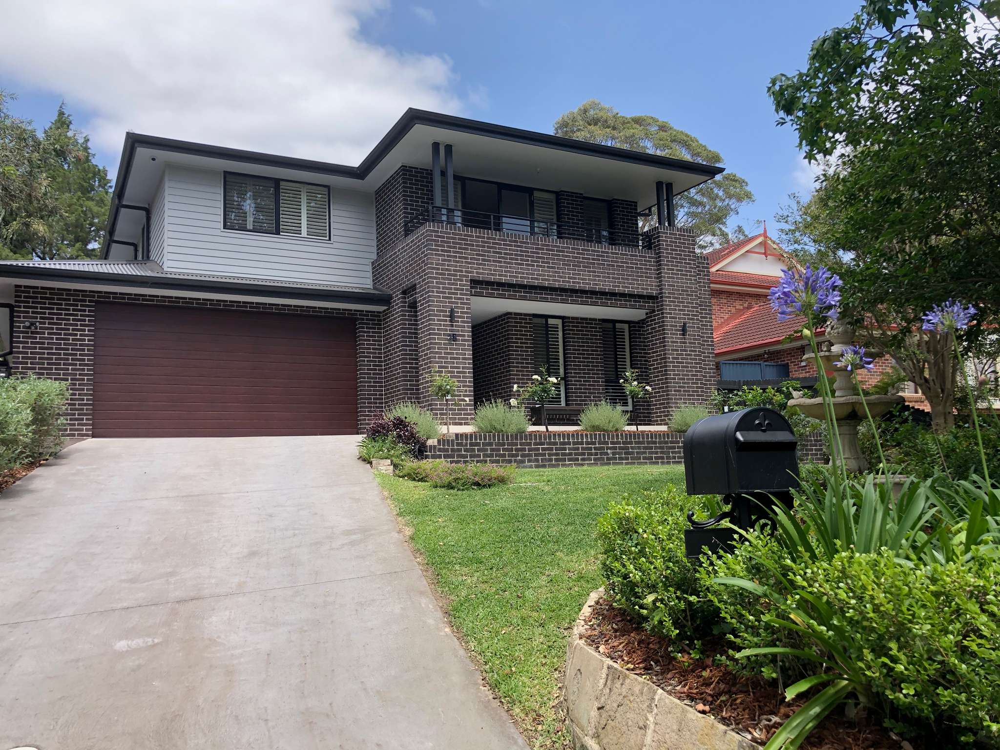


This is the facade we chosen, a contemporary and lodge feel facade, which we think harmonized to the surrounding leafy street feel.


Prefer stair cases from the lot boundry. But if for the budget reason, stair could start from the end of driveway.
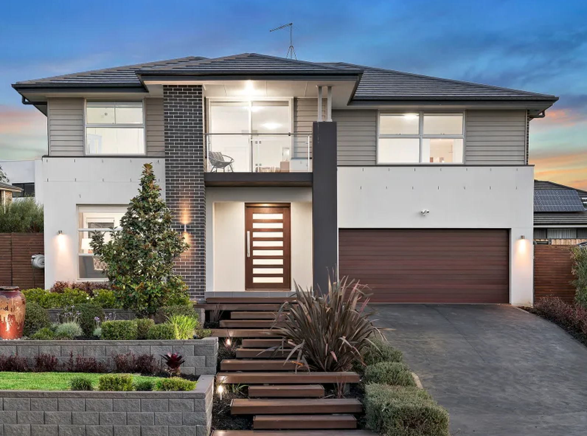

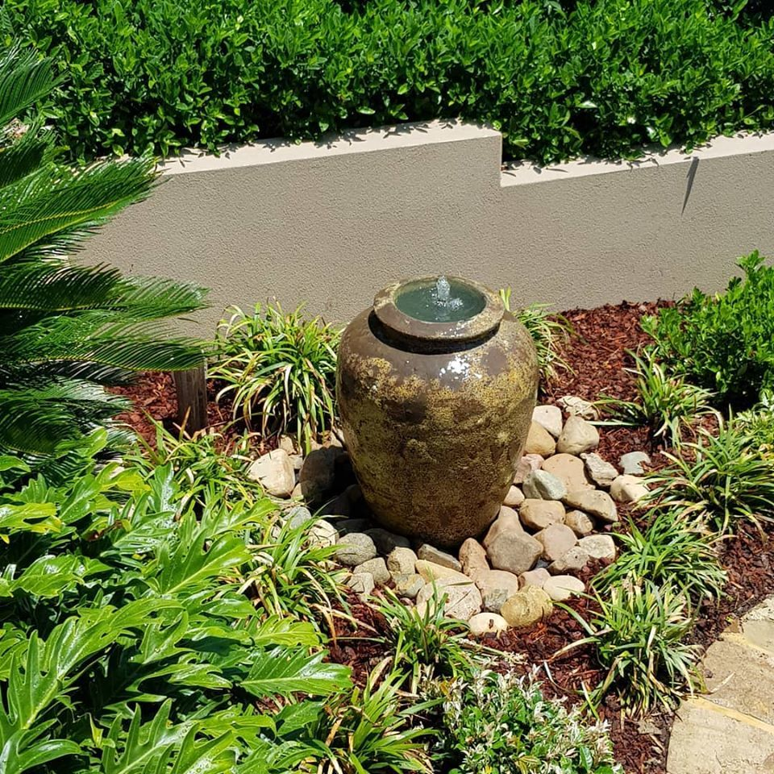